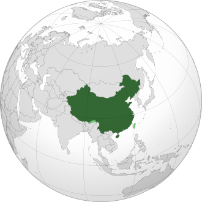
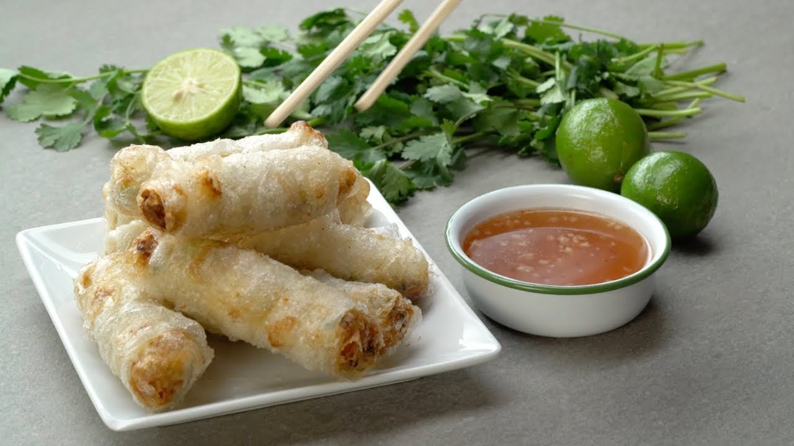
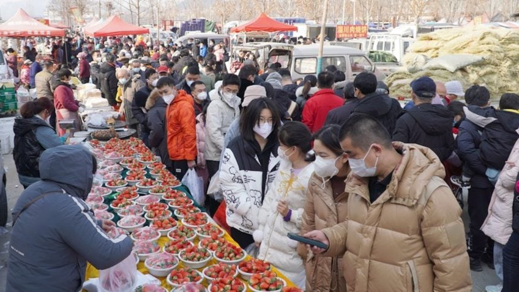
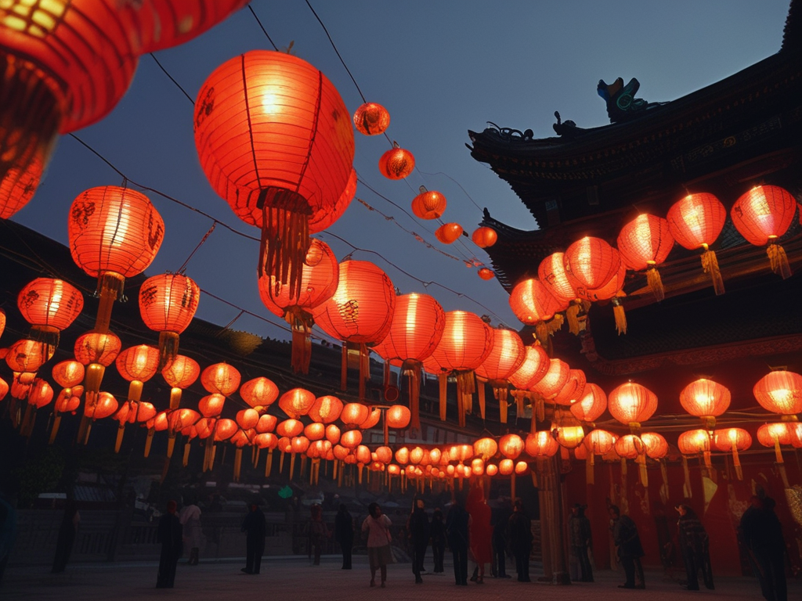

A China fica localizada na Ásia Oriental, mais especificamente no continente asiático
A China possui uma das civilizações mais antigas e influentes do mundo, com mais de 5.000 anos de história. A cultura chinesa valoriza tradições como o Confucionismo, o Taoismo e o Budismo, que moldaram a forma como os chineses pensam e vivem até hoje.
A arte chinesa inclui a caligrafia, a ópera de Pequim, a dança do leão e do dragão, além de uma rica tradição literária e filosófica. As festividades tradicionais, como o Ano Novo Chinês e o Festival da Lua, são momentos marcantes da vida cultural do país.
A culinária chinesa é incrivelmente variada e regionalizada. Cada região tem seus próprios sabores e pratos característicos. Os principais estilos incluem:
- Culinária de Sichuan (Centro): picante e aromática, com muito uso de pimenta e alho.
- Culinária cantonesa (Sul): sabores mais suaves, com foco em frutos do mar e cozimento no vapor
- Culinária do Norte (Pequim): inclui o famoso Pato de Pequim e pratos com massa e trigo.
- Culinária de Xangai(Sudeste): sabores levemente adocicados e uso frequente de molho de soja.
Pratos famosos incluem: Arroz frito Rolinho primavera Dumplings (jiaozi) Hot pot (fondue chinês)
O uso do chopstick (hashi) é tradicional, e o chá ocupa um lugar de destaque na cultura alimentar.
A China é o país mais populoso do mundo, com aproximadamente 1,4 bilhão de habitantes. A população é majoritariamente de etnia han, mas o país reconhece oficialmente 56 grupos étnicos diferentes.
A capital é Pequim, enquanto a maior cidade é Xangai. Outras cidades importantes incluem Guangzhou, Shenzhen, Chengdu e Hong Kong (Região Administrativa Especial).
A Grande Muralha da China tem mais de 21 mil quilômetros de extensão
- O sistema de escrita chinês é composto por ideogramas, com milhares de caracteres.
- A China foi o berço de invenções como a bússola, o papel, a pólvora e a impressão.
- A economia chinesa é a segunda maior do mundo, atrás apenas dos Estados Unidos.
- A moeda oficial é o Renminbi (Yuan - CNY).
